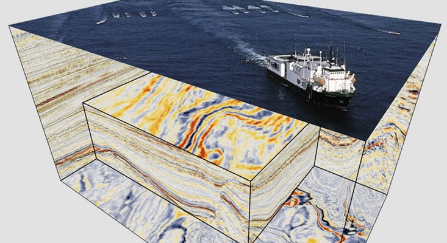
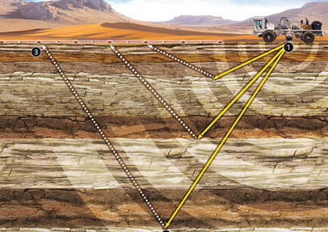
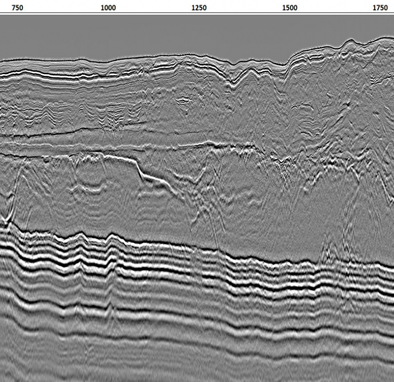
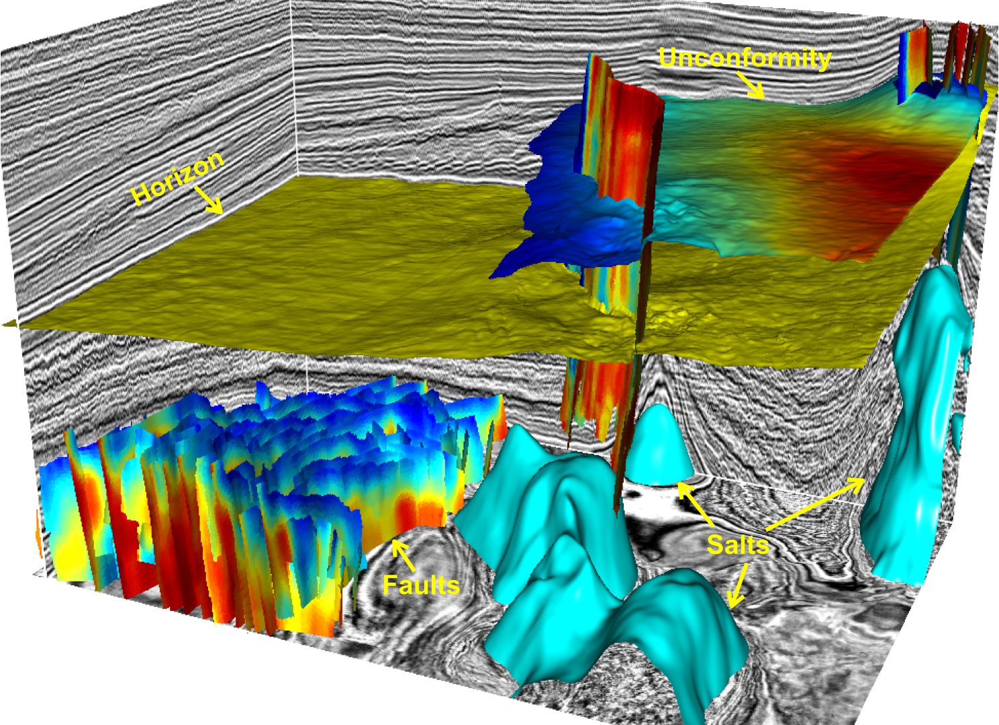

Badania sejsmiczne to metoda geofizyczna stosowana w rozpoznaniu budowy geologicznej skorupy ziemskiej.
Prace te realizowane są głównie w celu poszukiwań złóż węglowodorów. Polegają one na generowaniu fal sejsmicznych przy wykorzystaniu
metody vibroseis na lądzie lub air-gun'ów w warunkach morskich, odbioru za pomocą geofonów w warunkach lądowych lub hydrofonów
w zbiornikach wodnych oraz ich rejestracji. Uzyskuje się w ten sposób przekrój budowy gelologicznej wdłuż linii, na
której zlokalizowane były punkty wzbudzania i odbioru (profile 2D) lub powierzchniowo, gdy punkty wzbodzania i odbioru
umieszczone były na obszarze poligonów (badania 3D).
Przetwarzanie danych 2D i 3D
Przetwarzanie danych sejsmicznych to zespół zaawansowanych procedur obliczeniowych,
aplikowanych do zarejestriwabych tras sejsmicznych. Mają one na celu uzyskanie przekrojów geologicznych (profile 2D)
lub wolumenów danych 3D, odwzorowujących budowę geologiczną w domenie czasu, jak również głębokości.
Stanowią materiał wejściowy do wykonania interpretacji geologicznej.
Interpretacja danych 2D i 3D
Interpretacja danych sejsmicznych ma na celu odwzorowanie budowy geologicznej
na podstawie zarejestrowanych i przetworzonych profili sejsmicznych 2D i/lub wolumenów danych 3D,
które określają fizyczne własności skał i ich zmiany. Dane te są interpretowane po dowiązaniu do danych otworowych.
Następnie na podstawie modelu prędkości wykoonywana jest konwersja horyzontów, uskoków, poligonów i map
do domeny głębokości.

Akwizycja

Przetwarzanie

Interpretacja